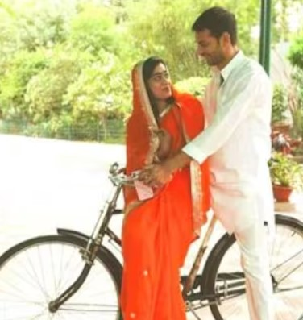
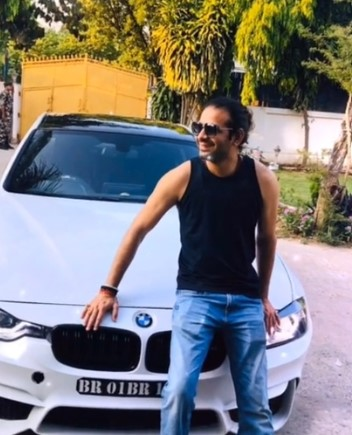
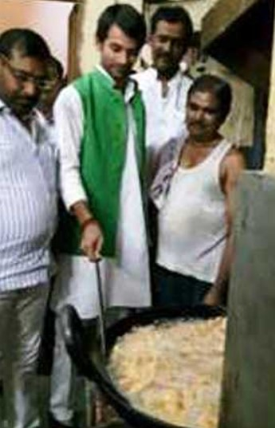
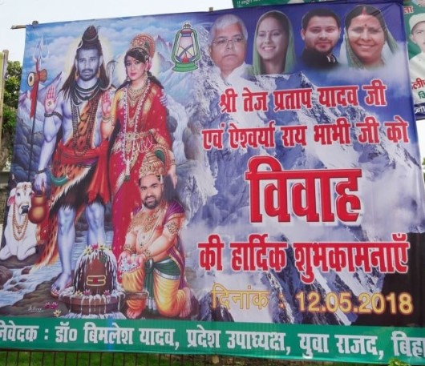
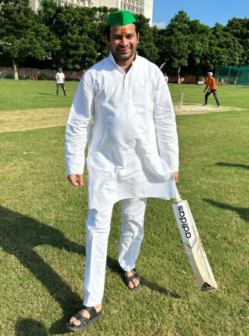

Tej Pratap Yadav is an Indian politician who serves as the cabinet minister of Environment, Forest and Climate Change in the Government of Bihar. He is known for being the elder son of former Chief Ministers of Bihar, Lalu Prasad Yadav and Rabri Devi.
Contents
Wiki/Biography
Tej Pratap Yadav was born on Saturday, 16 April 1988 (age 35 years; as of 2023) in Patna, Bihar. His zodiac sign is Aries. In 2010, he passed Intermediate from Bihar School Education Board (BSEB). [1]My Neta After completing his school education, he went to Bihar National College in Patna but could not pass his first-year BA exam in Political Science in 2012, so he left college.
Physical Appearance
Height (approx.): 5′ 8″
Weight (approx.): 65 kg
Hair Colour: Black
Eye Colour: Black
Family & Caste
Tej Pratap Yadav belongs to the Other Backward Class (OBC). [2]Forbes
Parents & Siblings
His parents, Lalu Prasad Yadav and Rabri Devi, are both former Chief Ministers of Bihar. He is the eldest son in the family. He has seven sisters named Misa Bharti (politician), Rohini, Chanda, Ragini, Hema, Anushka, and Raj Lakshmi Yadav. Indian politician, Tejashwi Yadav, is his younger brother.
Tej Pratap Yadav (standing back) with his parents, seven sisters, and brother (extreme left)
Wife & Children
On 18 April 2018, Tej Pratap Yadav got engaged at Place Hotel Maurya in Patna to Aishwarya Rai. The couple got married on 12 May 2018 at Bihar Veterinary College ground, Patna.
In 2019, the couple got separated.
Other Relatives
Indian political leaders Tej Pratap Singh Yadav and Chiranjeev Rao are his brothers-in-law. Sadhu Yadav and Subhash Prasad Yadav are his uncles. Chandrika Roy is his ex-father-in-law.

A picture of Chandrika Roy
Address
Tej Pratap Yadav resides at 208, Kautilya Nagar, MP MLA Colony, P.O. B.V. College, Distt. Patna.
Signature
Signature of Tej Pratap Yadav
Career
Politics
Tej Pratap Yadav worked as the Health Minister in Nitish Kumar’s government from November 2015 to July 2017. In December 2015, as Bihar’s Environment Minister, he encouraged people to ride horses to reduce pollution.
Tej Pratap Yadav while riding a horse
In 2019, there were problems in his marriage with Aishwarya Rai. This caused drama in the 2020 election for the Parsa constituency seat in Bihar. Aishwarya asked people to vote for Nitish Kumar, a big political opponent of her husband’s family.
Film
Tej Pratap appeared in a film titled ‘Rudra: The Avatar.’
Tej Pratap Yadav on the poster of the film ‘Rudra The Avatar’ (2018)
Social Media
Tej Pratap Yadav has a YouTube channel titled “L-R vlog,” where he often posts videos about his everyday life and travels. This channel reached 100,000 subscribers in June 2023. To celebrate this milestone, a big poster of Tej Pratap Yadav was put up in Patna, the capital of Bihar, to thank his 100,000 subscribers. Reportedly, this was to encourage people to follow his YouTube channel.
Controversies
Educational Certificate Issue
In November 2015, Tej Pratap and his brother Tejasvi submitted documents and their nomination papers for the legislative elections. However, there was a controversy about their education certificates. According to the documents, Tej Pratap completed his intermediate in 2010, while Tejaswi finished Class 9 in 2006. This implied that Tej Pratap was 25 years old, and Tejaswi was 26. It created confusion about their ages, making it seem like Tej Pratap was younger than Tejaswi, which was incorrect. [3]Aaj Tak
Journalist Murder Investigation
On 13 May 2016, a journalist named ‘Rajdeo Ranjan’ was shot and killed by unknown attackers on a motorcycle near a busy area called Station Road in Siwan, Bihar. Soon after the murder, Ranjan’s wife accused Tej Pratap of being involved in the conspiracy. The Supreme Court directed the CBI to investigate when a picture surfaced showing Tej Pratap with Mohammad Kaif, an associate of the criminal-politician Mohammad Shahabuddin. In September 2016, the Supreme Court issued notices to Tej Pratap Yadav and Shahabuddin. However, in March 2018, the Supreme Court cleared Tej Pratap and Shahabuddin of charges due to insufficient evidence. [4]Deccan Chronicle

Tej Pratap Yadav with Mohammad Kaif (left) and Rajdeo Ranjan (right)
Controversies and Warnings
In June 2017, he lost permission to run a gas station because he provided incorrect information about owning land. In November 2017, he warned Prime Minister, Narendra Modi, when his father’s security level was reduced from Z+ to Z. [5]Hindustan Times In February 2018, he faced allegations of building a temple on land he was not allowed to use without getting permission from the right authorities.
A picture of the temple foundation laid by Tej Pratap Yadav
Spouse’s Drug Allegations
In August 2019, his wife, Aishwarya Roy, claimed in the media that her husband was addicted to drugs. She also mentioned that he would sometimes wear costumes resembling Radha, Krishna, and Shiva, claiming to be their avatar. She accused him of beating her and for cross-dressing. She said,
Tej Pratap used to dress up like Lord Radha, Krishna and Shivaâ¦I got to know about this soon after my wedding that he used to dress up like gods and goddessesâ¦.once after consuming drugs, Tej Pratap wore a gaghra (long skirt) and choli (blouse) and dressed up like goddess Radha, he also wore makeup and a hair wig.”
Rai also mentioned that whenever she told him to quit drugs, Tej Pratap Yadav would say,
Ganja to Bhole babe ka prasad hai, usko kaise mana karen? (Marijuana is Lord Shivaâs oblation; how can I say no to that?). Krishna hi Radha hai, Radha hi Krishna haiâ (Krishna is Radha and Radha is Krishna).”
Tej Pratap Yadav with Aishwarya Rai on a bicycle ride
Domestic Violence Verdict
In December 2019, Aishwarya was spotted crying outside the Yadav family’s house in Patna by some media houses. During the media interaction, she said that Rabri Devi, her mother-in-law and former Chief Minister of Bihar, had hurt her, pulled her hair, taken her phone and other things, and kicked her out of the house. Aishwarya also accused Tej Pratap of hurting her. In October 2023, a family court in Patna said Tej was responsible for the incident. The court agreed to Aishwarya’s request for protection under the Domestic Violence Act. It told Tej Pratap Yadav to pay for everything like water and utilities at the house on Circular Road, where she used to live with Tej and Rabri Devi. [6]The Times of India
Journalist Assault Controversy
On the last day of the 2019 elections, a video showing his bodyguards supposedly attacking a video journalist became popular online. Yadav filed a police report saying it was a plot to harm him. [7]The Indian Express
Brief Details of IPCs
- 1 charge related to Voluntarily causing hurt by dangerous weapons or means (IPC Section-324)
- 1 charge related to Punishment for murder (IPC Section-302)
- 1 charge related to the Husband or relative of the husband of a woman subjecting her to cruelty (IPC Section-498A)
- 2 charges related to Disobedience to order duly promulgated by a public servant (IPC Section-188)
- 1 charge related to Punishment for wrongful restraint (IPC Section-341)
- 1 charge related to Punishment for voluntarily causing hurt (IPC Section-323)
- 1 charge related to Acts done by several persons in furtherance of common intention (IPC Section-34)
- 1 charge related to Assault or criminal force to deter a public servant from discharge of his duty (IPC Section-353)
- 1 charge related to Negligent act likely to spread infection of disease dangerous to life (IPC Section-269)
- 1 charge related to Malignant act likely to spread infection of disease dangerous to life (IPC Section-270)
Bike Collection
Tej Pratap Yadav owns a Honda Fireblade Superbike.
Tej Pratap Yadav with his Honda Fireblade Superbike
Car Collection
- Tej Pratap Yadav owns a BMW.

Tej Pratap Yadav with his BMW
- He owns a Ford.
Assets & Liabilities
Movable Assets
- Cash: Rs. 1,25,000
- Deposits in Banks: Rs. 14,87,371
- Bonds, Debentures and Shares: Rs. 25,10,000
- Personal loans/advance given: Rs. 33,00,056
- Motor Vehicles: Rs. 44,89,097
- Jewellery: Rs. 4,26,300
- Other assets, such as values of claims/interests:Â Rs. 85,000
Immovable Assets
- Agricultural Land: Rs. 32,20,000
- Non-Agricultural Land: Rs. 36,00,000
- Commercial Buildings: Rs. 30,00,000
- Residential Buildings: Rs. 62,20,741
Net Worth
In 2020, Tej Pratap Yadav’s net worth was calculated approximately at Rs. 266 Lakhs. [9]My Neta
Favourites
- Food: Chaap, Rohu, Catla fish
- Actor: Amitabh Bachchan
Facts/Trivia
- He also goes by the name Kanhaiya.
- In November 2015, during the oath-taking ceremony of the Nitish Kumar government, Tej Pratap Yadav misspelt “upekshit” (neglected) instead of “apekshit” (expected). Ram Nath Kovind, the then Governor of Bihar, had to correct him twice, telling him the right word was “apekshit.”
- Tej Pratap Yadav wanted to become a pilot and once joined the Bihar Flying Institute in Patna to get a commercial pilot license (CPL). To get the license, he needed to fly for at least 200 hours, but he could not complete this, so he stopped the training.
- In 2016, when he was the Health Minister in the Bihar government, he was seen frying snacks in the canteen of the Bihar Vidhan Sabha.

Tej Pratap Yadav while frying snacks at Vidhan Sabha canteen in 2016
- In February 2017, a Facebook user shared a post in which Tej Pratap was receiving a doctorate at âTakshsila University.” The post read,
I am extremely happy and delighted to inform you that Mr Tej Prasad Yadav (10 fail), son of Lalu Prasad Yadav, received the doctorate degree from Takshsila University, Bihar.”
However, later, it was revealed by some media sources that the news was fake and there was no such university in Bihar. This Facebook user mentioned Tej Pratap Yadav’s name wrong; as he wrote Tej ‘Prasad’ Yadav in the post. One of his Twitter posts in the same year revealed that when he was the health minister in the Bihar Cabinet in 2017, twelve MBBS toppers and one PG topper of Indira Gandhi Institute of Medical Sciences (IGIMS) were awarded gold medals during the third convocation ceremony.
- Tej Pratap Yadav and Aishwarya earned a lot of attention soon after their marriage when posters of them portraying Lord Shiva and Parvati were put up outside his house.

A poster of Tej Pratap and Aishwarya as avatars of Lord Shiva and Parvati
- Tej Pratap took these posters seriously and dressed up as Lord Shiva to pray at a temple in Patna in July 2018.
- Lalu Yadav chose his younger son Tejashwi Yadav as the future leader of their political party in 2018. This led to rumours of a disagreement between the two brothers (Tej Pratap and Tejashwi); however, their family later denied these rumours. [10]India Today
- In his leisure time, Tej Pratap Yadav likes horse riding, playing flute and cricket, and listening to music.

Tej Pratap Yadav while playing cricket
- In October 2021, during his political speech at the Chatra Janshakti Parishad, a group he started after having problems with RJD state chief Jagdanand Singh, Tej Pratap shared that he was a pilot and had once been chosen for the Indian Air Force. [11]Financial Express Tej Pratap said,
Before coming to politics, my background was of a pilot. I had applied to join Indian Air Force and was selected too. I have also done two years of training from Bihar Flying Instituteâ¦Cessna 172 was my aircraft. There was an instructor Captain Surya Pratap and he used to train me. I used to fly aircraft. It was my childhood passion to join the Indian Army.”
References


{kind=link}
{kind=link}
{kind=link}
{kind=link}
{kind=link}
{kind=link}
{kind=link}
{kind=link}
{kind=link}
{kind=link}
{kind=link}
{kind=link}
{kind=link}
{kind=link}
{kind=link}
{kind=link}
{kind=link}
{kind=link}
{kind=link}
{kind=link}
{kind=link}
{kind=link}
{kind=link}